رائد أعمال وقائد تكنولوجي تنفيذي، مؤسس ورئيس مجلس إدارة شركة مايكرو لينك لتكنولوجيا المعلومات (Micro Link) الرائدة منذ أكثر من 5 سنوات والمورد والمزود التكنولوجي المعتمد لكبرى المستشفيات (المواساة، ICC، الأهلي، أليكس سيدني)، وأرقى الفنادق والمنتجعات السياحية (فندق العلمين، بريزي وسيليّا سيوة)، والمراكز التجارية وتوكيلات السيارات (مركز صيانة نيسان أحمد مرعي، سيخ مشوي، لاتينو كافيه). أبتكر منظومات سحابية متكاملة (Healthcare SaaS, Enterprise ERP, Autonomous AI Systems) تدير ملايين العمليات والبيانات الحساسة يومياً بأعلى معايير الأمان المالي والمصرفي وبجاهزية تشغيلية لا تقبل الخطأ. Technology Entrepreneur and Executive CTO. Founder & CEO of Micro Link for IT Solutions—a premier corporate technology contractor and infrastructure supplier for over 5+ years, trusted by leading university and specialized hospitals (Al-Mowasat, ICC, Al-Ahly, Alex Sydney), 5-star luxury resorts (Al Alamein Hotel Marassi, Breezy & Celia Siwa), and major automotive & commercial enterprises (Nissan Ahmed Marei, Seekh Meshwy, Latino Cafe). I architect hyper-scalable cloud ecosystems (Healthcare SaaS, Core Enterprise ERP, Autonomous AI Solutions) handling millions of mission-critical transactions with zero tolerance for failure.
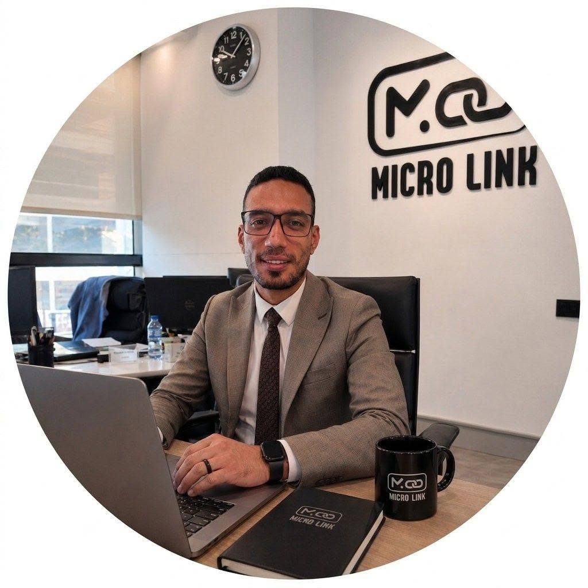
قيادة وتوريد تكنولوجيا المؤسسات الكبرى Enterprise Tech Leadership & Supply
مستشفيات كبرى ومنتجعات 5 نجوم Major Hospitals & 5-Star Resorts
ريادة هندسية وقيادة استراتيجية للمؤسسات والمستشفيات Engineering Leadership & Enterprise Advisory
مؤسس ومورد معتمد لكبرى المستشفيات والفنادق والمطاعم Certified Supplier for Premier Hospitals & Resorts
معمارية وتطوير أنظمة سحابية متكاملة (SaaS & AI & ERP) End-to-End Core Architectures (SaaS & AI & ERP)
بنية تحتية دفاعية صلبة غير قابلة للتوقف أو الاختراق Mission-Critical Zero-Downtime Infrastructure
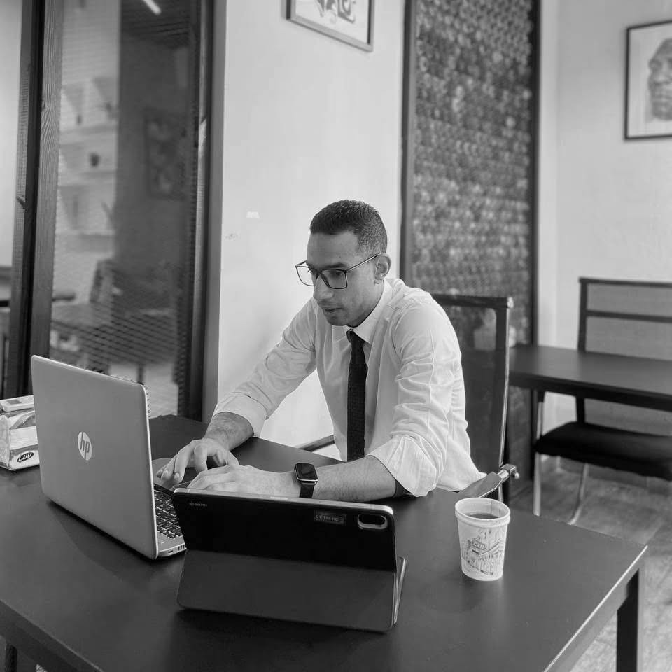
سنوات من القيادة
الهندسية الميدانية
Years of Hands-on
Tech Leadership
تجاوزت مرحلة التنفيذ الكلاسيكي لأصبح شريكاً استراتيجياً ورائد أعمال يقود شركة Micro Link لتكنولوجيا المعلومات بجانب دوري كـ (Principal Solutions Architect & Fractional CTO) لكبار المستثمرين ومجالس إدارات المستشفيات والمجموعات الفندقية. أمتلك المزيج التقني النادر عالمياً: الرؤية الاستراتيجية لتحويل العمليات المعقدة إلى منتجات SaaS متطورة ومربحة، مع القدرة التقنية الصارمة على كتابة الكود عالي الأداء، وبناء وإدارة السيرفرات وشبكات الأمان وحمايتها بنفسي دون الحاجة لأي وسيط. I have transitioned beyond standard execution into a trusted strategic partner and technology founder leading Micro Link for IT Solutions, alongside serving as Principal Solutions Architect & Fractional CTO for prominent investors, hospital boards, and luxury hospitality groups. I combine executive business strategy with rigorous technical mastery—designing scalable SaaS and AI products while personally architecting high-performance servers, data centers, and bulletproof network defenses.
حينما أضع معماريّة لنظام أو بنية تحتية لمستشفى أو منتجع، أبنيه ليتحمل النمو المتسارع (Hyper-Scalability)، ويتصدى لأشرس التحديات الأمنية، ويعمل دون انقطاع، مما يضمن أعلى موثوقية تشغيلية ويقلل تكاليف التشغيل بنسبة تتجاوز 40%. When I blueprint an enterprise system or hospital infrastructure, I architect it for hyper-scalability, maximum cyber resilience, and non-stop operational availability—slashing operational overhead by over 40% while safeguarding sensitive institutional data.
إدارة وتوريد المنظومات التقنية، الداتا سنتر، وشبكات المستشفيات والفنادق والمطاعم لأكثر من 5 سنوات. Managing & supplying enterprise IT systems, data centers, and hospital/resort networks for 5+ years.
مستشفيات المواساة الجامعية، مستشفى ICC، المستشفى الأهلي، أليكس سيدني، ومراكز الأشعة والعيادات الكبرى. Al-Mowasat University Hospital, ICC Hospital, Al-Ahly Hospital, Alex Sydney, and major diagnostic centers.
تأسيس وتنفيذ شبكات الإنترنت والاتصالات لفندق العلمين (مراسي)، وفندق بريزي وسيليّا في سيوة. Deploying high-capacity network backbones for Al Alamein Hotel (Marassi), Breezy Island, and Celia Siwa.
مؤسس منصة Maher AI ومساعد PharmaNova الذكي ومنظومة Microsystem ERP للحسابات المزدوجة. Creator of Maher AI platform, PharmaNova smart assistant, and Microsystem ERP double-entry financial core.
المورد والمزود والمنفذ المعتمد للبنية التحتية، شبكات الإنترنت فائقة السرعة، ومراكز البيانات لكبرى المستشفيات والمنتجعات الفندقية وسلاسل المطاعم الشهيرة في مصر لأكثر من 5 سنوات. Certified technology contractor, infrastructure engineer, and network supplier for leading hospitals, 5-star desert & beach resorts, and renowned retail chains across Egypt for over 5+ years.
الشركة الرائدة في تقديم الحلول التكنولوجية المتكاملة، تأسيس شبكات الاتصالات، غرف الخوادم (Data Centers)، أنظمة المراقبة الذكية، وحلول الحماية السيبرانية في جمهورية مصر العربية. تأسست الشركة برؤية هندسية تسعى لتحقيق التميز التقني والاستدامة التشغيلية للكيانات الطبية والسياحية الكبرى. A premier technology provider specializing in integrated IT solutions, structured enterprise cabling, data center construction, smart surveillance, and advanced cybersecurity architectures across Egypt, engineered for long-term operational resilience.
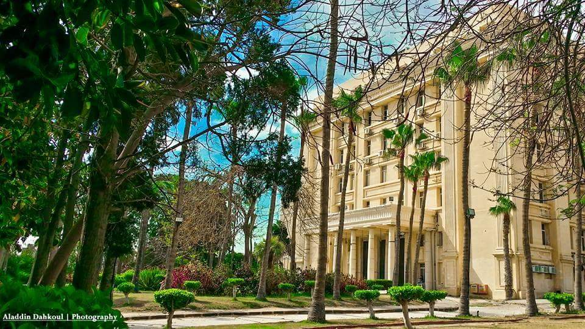
أحد أعرق وأكبر الصروح الطبية التاريخية في مصر، يضم وحدات متقدمة لزراعة الأعضاء والغسيل الكلوي والعنايات المركزة. One of Egypt's most prestigious medical landmarks, housing advanced organ transplantation, nephrology, and ICU units.
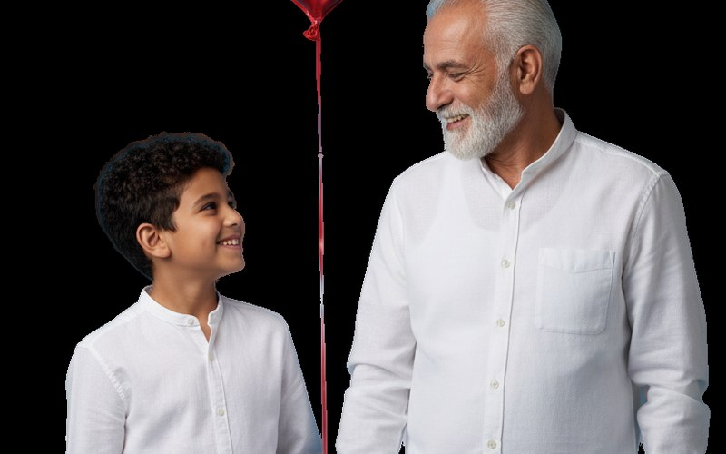
منظومة طبية رائدة لجراحة القلب والقسطرة، وسلسلة مراكز ICC Scan المتقدمة للأشعة التشخيصية والمقطعية والرنين. A premier specialized cardiac surgery hospital and regional chain of high-precision diagnostic and MRI centers.
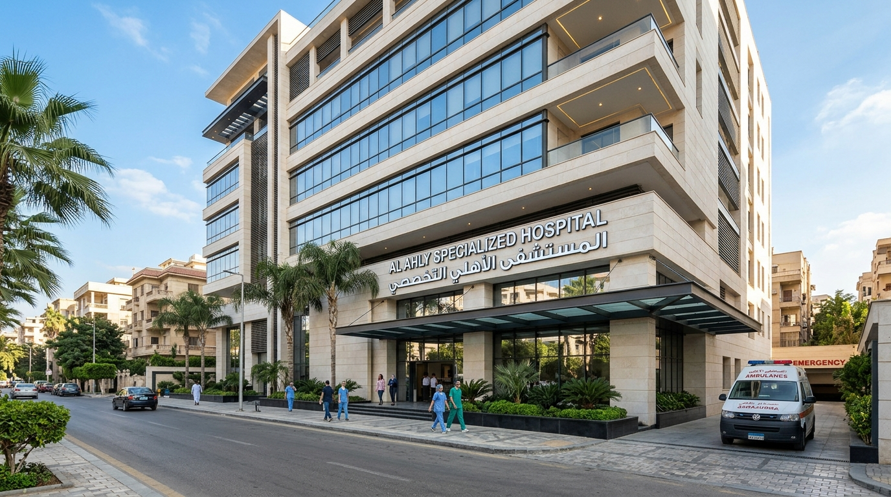
مستشفى تخصصي يقدم خدمات الرعاية الصحية والعمليات الجراحية المتقدمة لآلاف المرضى سنوياً بأحدث التجهيزات. Private specialized hospital offering advanced surgical care, emergency services, and patient management.
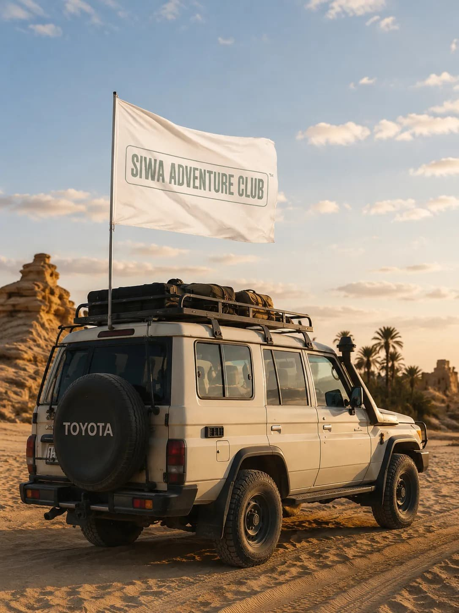
منتجع صحراوي فاخر 5 نجوم يقع في جزيرة محاطة بالمياه والطبيعة الساحرة، يعد الوجهة الأبرز للاستجمام والهدوء في سيوة. An exclusive 5-star eco-luxury island resort surrounded by pristine lakes and tranquil desert dunes in Siwa.
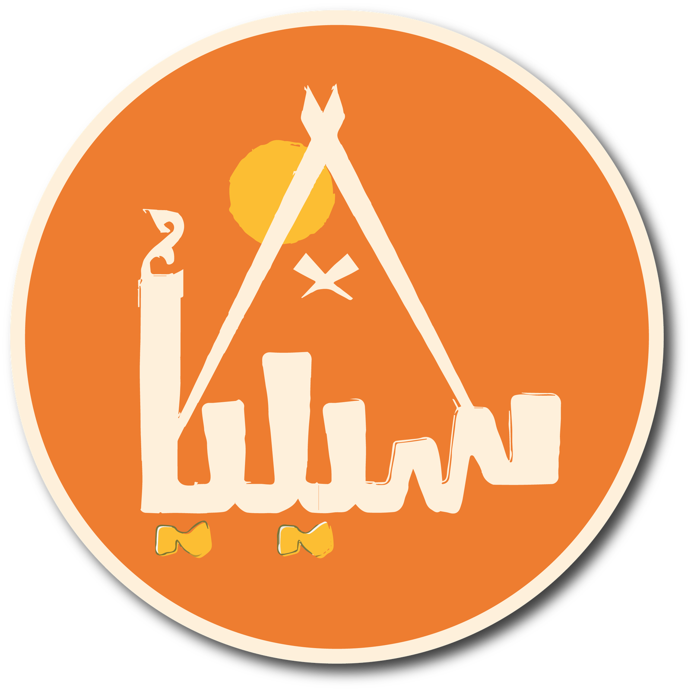
أحد أماكن الإقامة المميزة في قلب واحة سيوة بالقرب من قلعة شالي التاريخية وعين كليوباترا، محطة لعشاق رحلات السفاري. Distinctive hotel in the heart of Siwa near Shali Fortress, catering to international travelers and safari expeditions.
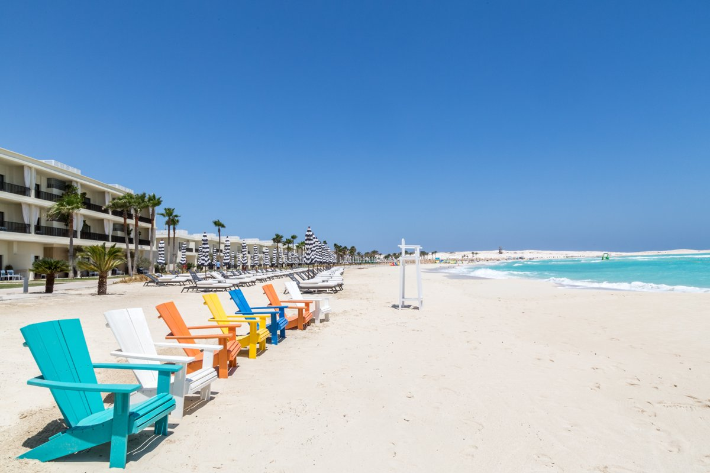
الفندق التاريخي الأسطوري والأفخم بالساحل الشمالي على خليج سيدي عبد الرحمن بمياهه الفيروزية الساحرة. The historic and glamorous luxury landmark of the Mediterranean North Coast, situated on Sidi Abdel Rahman Bay.
إحدى أشهر وأرقى سلاسل المطاعم المتخصصة في المأكولات والمشويات الشرقية الراقية ذات الإقبال الجماهيري الواسع. One of Alexandria's premier oriental grill and dining destinations with high-volume daily operations.
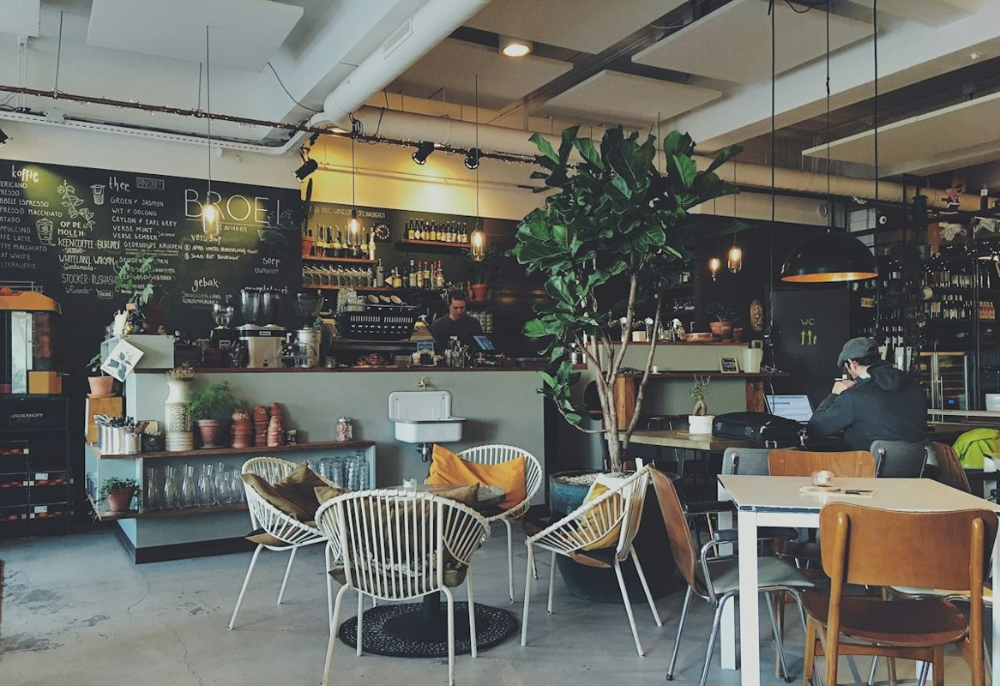
الواجهة البحرية السياحية الأبرز على كورنيش الإسكندرية بإطلالة بانورامية ساحرة على البحر المتوسط. The iconic seaside restaurant destination on Alexandria's Mediterranean waterfront at Gleem.
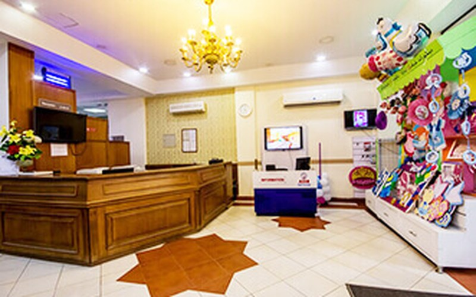
صرح طبي وبحثي عريق تأسس عام 1998، رائد في أمراض النساء والتوليد وجراحات المناظير والحقن المجهري ورعاية الأطفال المبتسرين. Renowned specialized center established in 1998, pioneering in obstetrics, IVF, laparoscopic surgery, and neonatal ICUs.
الموزع والوكيل المعتمد لسيارات نيسان (مجموعة أحمد مرعي منذ 1978)، وأكبر مجمع متطور لصيانة السيارات وقطع الغيار في الإسكندرية. Official authorized Nissan dealership and the largest state-of-the-art automotive service center in Alexandria since 1978.
نماذج حية من البرمجيات والأنظمة الكبرى التي قمت بتطويرها لخدمة الصيدليات، والمراكز الطبية، والمؤسسات المالية، ومنصات الذكاء الاصطناعي. Production-grade software architectures serving pharmacies, medical clinics, double-entry ERP accounting, and AI automation engines.
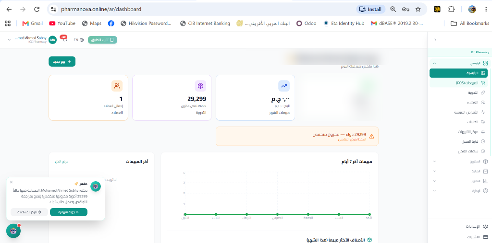
نظام سحابي متكامل ومتقدم لإدارة الصيدليات ومبيعات الكاشير (POS)، إدارة وتتبع أكثر من 29,000 دواء ومخزون، تنبيهات النواقص والصلاحيات، ومدمج به مساعد الذكاء الاصطناعي الذكي "ماهر | Maher AI" لإرشاد الصيدلي وتقديم التوصيات اللحظية. Full-stack pharmacy POS & inventory management system tracking over 29,000 items, with automated shortage alerts, expiry tracking, and an integrated "Maher AI" assistant for real-time pharmacology decisions.
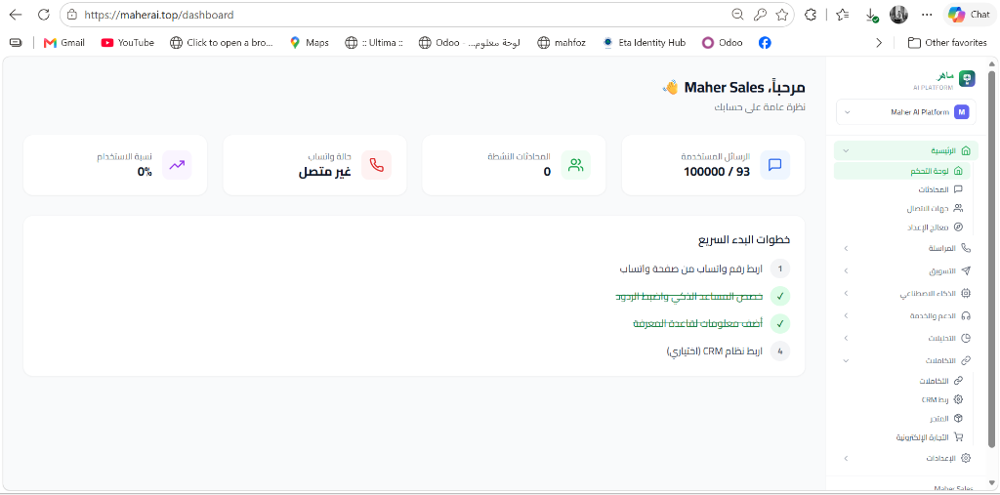
منصة رائدة لتطوير وتقديم حلول وأدوات الذكاء الاصطناعي المخصصة للشركات، المساعدين الآليين، معالجة البيانات وأتمتة المهام الذكية والرد الفوري على العملاء لرفع كفاءة الأعمال وخفض التكاليف التشغيلية. Proprietary AI business automation platform featuring LLM-driven virtual agents, automated customer routing, intelligent data analysis, and instant CRM messaging integration.
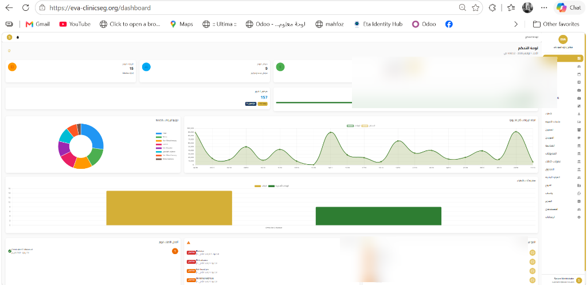
نظام إدارة متكامل للمراكز والعيادات التخصصية، يشمل متابعة الإيرادات والتحصيلات، توزيع نسب الأطباء، جدولة مواعيد المرضى، ومخططات بيانية تفاعلية لحركة العيادات في الوقت الفعلي. Comprehensive healthcare management ERP handling multi-branch clinic appointments, doctor commission splits, electronic patient files, and real-time executive revenue analytics.
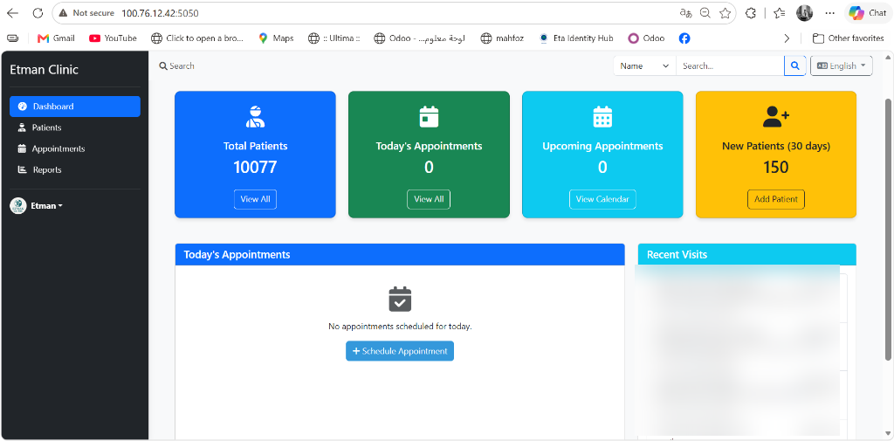
نظام مصمم خصيصاً لإدارة عيادة دكتور عتمان، يخدم قاعدة بيانات ضخمة تفوق 10,000 مريض، مع إدارة المواعيد اليومية، تسجيل الزيارات والروشتات، وتقارير متابعة الحالات السريرية. Tailored clinical workflow engine managing a database of over 10,000 active patients, daily appointments calendar, digital prescriptions, and clinical follow-ups.
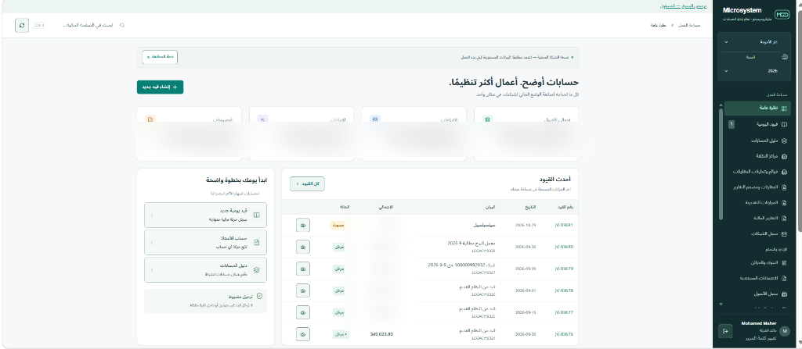
نظام محاسبي وإداري ضخم يشمل القيود اليومية المحاسبية المزدوجة، شجرة الحسابات متعددة المستويات، مراكز التكلفة، سجلات الأصول، المبيعات والمشتريات والمخازن والتصنيع بأعلى دقة مالية. Robust accounting ERP engine implementing double-entry general ledger, multi-tiered chart of accounts, cost centers, fixed assets registers, and manufacturing workflows with 100% financial reconciliation.
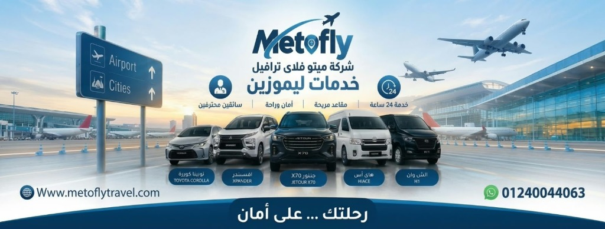
منصة متطورة ومبهرة لشركة ميتوفلاي ترافيل لخدمات الليموزين والنقل السياحي، مزودة بمستشار ذكي لاختيار سعة السيارة حسب عدد الركاب والشنط، ونظام ربط مباشر بالحجز عبر واتساب API. High-performance digital booking platform engineered for Metofly Travel, featuring a smart vehicle capacity algorithm (passenger & luggage optimization) and instant WhatsApp API reservation routing.
المزيج النادر الذي يضمن لك بناء برمجيات خالية من الثغرات، تعمل بسرعة قصوى، ومستقرة على بنيات تحتية صلبة. The rare technical duality ensuring bug-free, high-performance software running seamlessly on hardened mission-critical infrastructure.
سجل حافل بالنجاح في توجيه الرؤية التكنولوجية، قيادة فرق العمل، وحماية البيانات في أكبر المنشآت الطبية والهندسية والتجارية. A distinguished track record in directing IT strategy, managing technical teams, and defending data integrity in top medical, engineering, and commercial entities.
تأسيس وقيادة شركة Micro Link IT Solutions كمزود ومورد تكنولوجي معتمد في مصر. الإشراف على صفقات التوريد، تصميم وتنفيذ مراكز البيانات، وتجهيز شبكات الاتصالات والبنية التحتية لكبرى المستشفيات (المواساة الجامعي، ICC، الأهلي التخصصي، أليكس سيدني)، الفنادق والمنتجعات الفاخرة 5 نجوم (فندق العلمين، بريزي وسيليّا سيوة)، ومراكز الصيانة والمطاعم الشهيرة (نيسان أحمد مرعي، سيخ مشوي، لاتينو كافيه). Founding and leading Micro Link IT Solutions as a certified enterprise contractor in Egypt. Directing IT procurement, turnkey data center deployments, and high-capacity network infrastructure for major hospitals (Al-Mowasat, ICC, Al-Ahly, Alex Sydney), 5-star luxury resorts (Al Alamein Hotel, Breezy & Celia Siwa), and commercial enterprises (Nissan Ahmed Marei, Seekh Meshwy, Latino Cafe).
قيادة الرؤية التكنولوجية والمعمارية لمجموعة من أحدث المنصات السحابية والأنظمة الذكية: منصة Maher AI، نظام إدارة الصيدليات الذكي PharmaNova، منظومة المحاسبة والتصنيع Microsystem ERP، منظومة Eva Clinics، ونظام عيادات دكتور عتمان (10,000+ مريض). Directing the architectural blueprints and engineering vision of next-generation enterprise platforms: Maher AI platform, PharmaNova intelligent pharmacy ERP, Microsystem ERP double-entry financial core, Eva Clinics, and Dr. Etman Clinic (10,000+ active patients).
قيادة البنية التحتية التكنولوجية لجميع أفرع المستشفى ومراكز الأشعة، إدارة الداتا سنتر، تأمين أنظمة الـ PACS و RIS الطبية الحساسة، إدارة خوادم Active Directory و Domain Controllers، ضبط جدران الحماية FortiGate Next-Gen Firewalls، موازنة الأحمال، وضمان استمرارية عمل المستشفى على مدار الساعة (24/7 Zero Downtime). Directing mission-critical IT infrastructure across all hospital branches and radiology centers. Managing high-availability data centers, securing PACS & RIS diagnostic suites, Active Directory domain architecture, FortiGate NGFWs, and ensuring 24/7 zero-downtime hospital continuity.
المستشار التقني للمستشفى في حوكمة وتأمين البنية التحتية، الإشراف على الداتا سنتر، نشر وإعداد خوادم Linux Enterprise CentOS، ربط ودمج خطوط الإنترنت المتعددة بأعلى كفاءة عبر Mikrotik، وإدارة سياسات المستخدمين والـ Group Policies لضمان سرية البيانات الطبية. Executive IT advisor for hospital governance and server infrastructure. Modernizing data center racks, Linux Enterprise deployments, Mikrotik multi-WAN failovers, and stringent user security policies.
تأسيس الشبكات الافتراضية المؤمنة متعددة المواقع عبر ZeroTier SD-WAN، دمج خطوط الإنترنت وإدارة سرعات المستخدمين عبر أجهزة Mikrotik، وإعداد سيرفرات لينكس CentOS وحماية داتا ومخططات المشاريع الهندسية الحساسة. Engineering multi-site ZeroTier SD-WAN encrypted tunnels, Mikrotik bandwidth shaping, Linux CentOS storage servers, and safeguarding intellectual CAD & BIM engineering data.
بناء وتأسيس الداتا سنتر من نقطة الصفر (Building Greenfield Data Center)، تصميم وتنفيذ الـ File Servers، هندسة سياسات المستخدمين وتقديم الاستشارات التقنية لإدارة الشركة. Greenfield data center buildout from ground zero, redundant file server architectures, corporate access policies, and enterprise IT governance.
الدعم الميداني للأنظمة الطبية والسيرفرات، إدارة وحدات التخزين، تطبيق أحدث بروتوكولات الحماية، ودعم اجتماعات مجلس الإدارة والتدريب التقني للكوادر الطبية. Field support for medical EMR software, SAN storage arrays, clinical cybersecurity protocols, and board-level executive tech presentations.
حلول هندسية متكاملة مصممة للشركات والمستشفيات ورواد الأعمال لتعظيم الأرباح، تقليص تكاليف التشغيل بنسبة 40%، وضمان الأمان المطلق. Holistic engineering and consulting services designed to maximize ROI, slash operational costs by over 40%, and guarantee rock-solid cyber security.
شريك تقني تنفيذي لمجلس إدارتك: صياغة الاستراتيجية الرقمية، اختيار المعماريات الأنسب، تقييم فرق البرمجة، وتوجيه الاستثمار التكنولوجي لأعلى عائد مالي. Executive technology partner for your boardroom: crafting digital roadmaps, selecting scalable architectures, vetting dev teams, and optimizing tech investments for maximum ROI.
ابتكار وبناء منصات سحابية ذكية تدمج نماذج الذكاء الاصطناعي التوليدي (LLMs) ومساعدين افتراضيين مؤتمتين لخدمة العملاء وتحليل القرارات في الوقت الفعلي. Engineering custom AI ecosystems integrating modern LLMs, predictive decision engines, and conversational CRM assistants for 24/7 business automation.
معمارية متكاملة للعيادات والمستشفيات: السجلات الطبية الإلكترونية (EMR)، تنظيم غرف الكشف، حساب أتعاب ونسب الأطباء بدقة، ونظام الصيدليات الذكي. End-to-end clinical workflow suites: Electronic Medical Records (EMR), operating room scheduling, physician commission splits, and intelligent pharmacy POS.
بناء وتخصيص أنظمة المحاسبة المزدوجة، مراكز التكلفة، شجرة الحسابات، إدارة المخازن متعددة الفروع، والتصنيع بأعلى دقة وتوافق مالي وضريبي. Developing rock-solid double-entry ledger engines, cost center allocation, multi-warehouse inventory, and automated tax compliance workflows.
تأسيس غرف الخوادم (Data Centers) من الصفر، إدارة بيئات Windows و Linux Enterprise، وبناء خطط التعافي من الكوارث (Disaster Recovery & Zero Downtime). Greenfield data center engineering, enterprise virtualization, hybrid cloud disaster recovery plans, and 99.99% high-availability clustering.
تأمين أصول الشركات ضد الاختراقات عبر جدران الحماية FortiGate و Mikrotik، وإنشاء شبكات ZeroTier و Site-to-Site VPN المشفرة بأعلى المعايير. Hardening enterprise perimeters with FortiGate NGFWs, ZeroTier encrypted SD-WAN, multi-branch VPNs, and military-grade endpoint protection.
تواصل معي مباشرة لمناقشة أفكارك ومشاريعك، وبناء الحل التكنولوجي أو البنية التحتية الصلبة التي تدعم نموك المستقبلي. Reach out directly to discuss high-level technical partnerships, SaaS architectures, or enterprise infrastructure supply contracts.
أرحب بالتواصل المباشر مع أصحاب الأعمال، مديري المستشفيات، والمستثمرين لمناقشة المشاريع الكبرى، عقود الاستشارات التقنية، وتأسيس الأنظمة السحابية. Open for direct discussions with enterprise leaders, hospital chairpersons, and investors regarding technical advisory, software architecture, and infrastructure procurement.
+20 122 322 3463
+20 122 322 3463
www.microlink-eg.com
mohamedmaher020@gmail.com
linkedin.com/in/imohamedmaher
facebook.com/IMohamedMaher
github.com/IMohamedMaher
t.me/IMohamedMaher